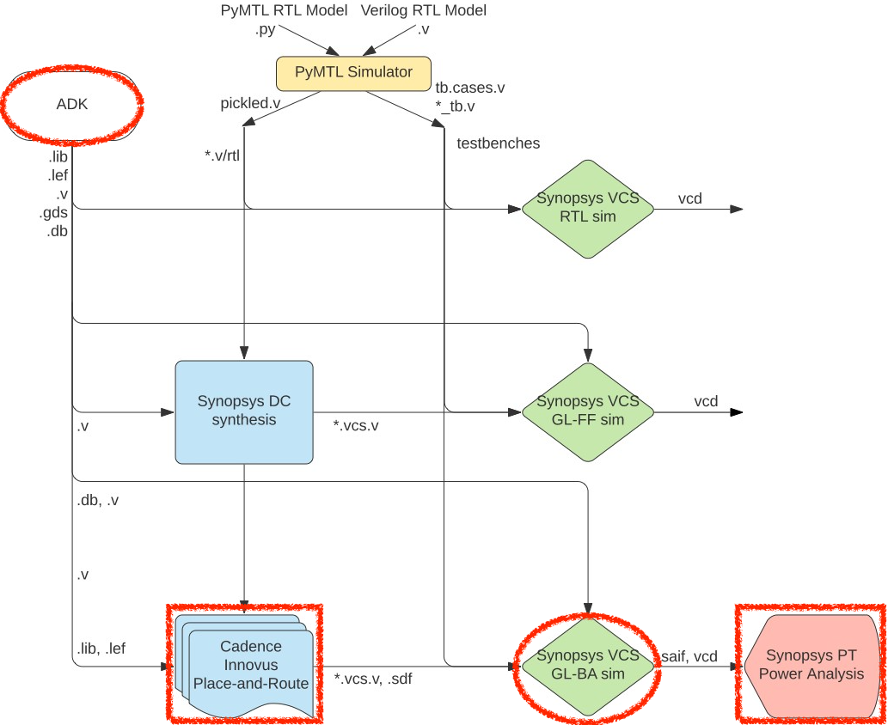
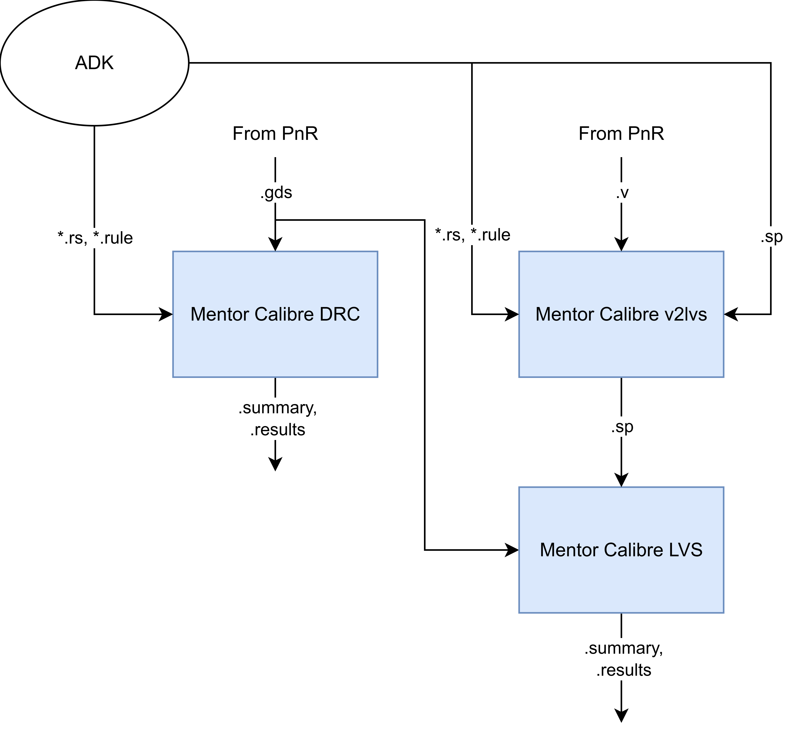

ECE 6745 Lab 7: Commercial Back-End Flow
In this lab, we will be discussing the back-end of the ASIC toolflow. More detailed tutorials will be posted on the public course website, but this lab will at least give you a chance to take a gate-level netlist through place-and-route, simulate the final gate-level netlist, perform static timing and energy analysis, as well as execute DRC and LVS. The following diagram illustrates the tool flow we will be using in ECE 6745. Notice that the Synopsys and Cadence ASIC tools all require various views from the standard-cell library which part of the ASIC design kit (ADK).

The "back-end" of the flow is highlighted in red and refers to the PyMTL simulator, Synopsys DC, and Synopsys VCS:
-
We use Cadence Innovus to place-and-route our design, which means to place all of the gates in the gate-level netlist into rows on the chip and then to generate the metal wires that connect all of the gates together. We need to provide Cadence Innovus with the standard-cell library front- and back-end views. Cadence Innovus takes as input the
.libfile which is the ASCII text version of a.dbfile. In addition, we need to provide Cadence Innovus with technology information in.lefand.captableformat and abstract physical views of the standard-cell library in.lefformat. Cadence Innovus will generate an updated Verilog gate-level netlist, a.speffile which contains parasitic resistance/capacitance information about all nets in the design, and a.gdsfile which contains the final layout. The.gdsfile can be inspected using the open-source Klayout GDS viewer. Cadence Innovus also generates reports which can be used to accurately characterize area and timing. -
We use Synopsys VCS for back-annotated gate-level simulation. Gate-level simulation involves simulating every standard-cell gate and helps verify that the Verilog gate-level netlist is functionally correct. Fast-functional gate-level simulation does not include any timing information, while back-annotated gate-level simulation does include the estimated delay of every gate and every wire.
-
We use Synopsys PrimeTime (PT) to perform both static timing analysis and power-analysis of our design. Both of these require parasitic capacitance information for every net in the design (which comes from Cadence Innovus), and power-analysis additionally requires switching activity information for every net in the design (which comes from the back-annotated gate-level simulation). Synopsys PT puts the capacitance and clock frequency together to estimate setup and hold time on each path of the design, while also putting in switching activity and voltage to estimate the power consumption of every net and thus every module in the design.

The diagram above illustrates the DRC (design-rules check) and LVS (layout-versus-schematic) verification flow using Mentor Calibre. These checks are performed after place-and-route to ensure the design is ready for manufacturing:
-
DRC Flow: The post-PNR GDS file is checked against the foundry's design rules. The rules file (
.rule) contains geometric constraints such as minimum metal width, minimum spacing between wires, minimum area for metal shapes, and enclosure rules for vias. -
LVS Flow: The post-PNR Verilog netlist is first converted to SPICE format using
v2lvs. Then Calibre extracts the circuit connectivity from the GDS layout and compares it against the SPICE netlist to ensure they match.
Calibre is configured using runset files (.rs), which capture all
the options that would normally be set through the Calibre GUI. The
runset files specify:
- Rules file: Path to the foundry-provided rule file
- Run directory: Where to store the results
- Layout file: The GDS file to check/extract
- Top cell: The top-level cell name in the layout
- Source file (LVS only): The SPICE netlist to compare against
- Rule waivers (DRC only): Which checks to skip for block-level design
By using runset files, you can run Calibre in batch mode and easily re-run DRC/LVS after making changes. When moving to a new design, you only need to update the top cell name in the runset file. We consider DRC and LVS as part of "signoff," where we essentially "sign-off" that the block is clean and ready to be taped out or instantiated in a larger design.
Here is a list of all of the steps we will be working with today.
01-pymtl-rtlsim
02-synopsys-vcs-rtlsim
03-synopsys-dc-synth
04-synopsys-vcs-ffglsim
05-cadence-innovus-pnr
06-synopsys-pt-sta
07-synopsys-vcs-baglsim
08-synopsys-pt-pwr
09-mentor-calibre-drc
10-mentor-calibre-lvs
Extensive documentation is provided by Synopsys and Cadence. We have organized this documentation and made it available to you on the Canvas course page:
1. Logging Into ecelinux
Students MUST work in pairs!
You MUST work in pairs for this lab, as having too many instances of
Innovus open at once can cause the ecelinux servers to crash. So
find a partner and work together at a workstation to complete today's
lab.
Follow the same process as previous labs. Find a free workstation and log into the workstation using your NetID and standard NetID password. Then complete the following steps.
- Start VS Code
- Install the Remote-SSH extension, Surfer, Python, and Verilog extensions
- Use View > Command Palette to execute Remote-SSH: Connect Current Window to Host...
- Enter netid@ecelinux-XX.ece.cornell.edu where XX is an ecelinux server number
- Use View > Explorer to open your home directory on ecelinux
- Use View > Terminal to open a terminal on ecelinux
- Start MS Remote Desktop
Now use the following commands to clone the repo we will be using for today's lab.
% source setup-ece6745.sh
% source setup-gui.sh
% mkdir -p ${HOME}/ece6745
% cd ${HOME}/ece6745
% git clone git@github.com:cornell-ece6745/ece6745-lab7 lab7
% cd lab7
% tree
To make it easier to cut-and-paste commands from this handout onto the
command line, you can tell Bash to ignore the % character using the
following command:
2. Ripple Carry Adder
In this section, we will push a four-bit ripple carry adder through both
the front- and back-end flow. We will work in
${HOME}/ece6745/lab7/asic/playground/addrc4b with numbered step
directories.
2.1. Front-End Flow
We have provided complete runscripts for the front-end flow from last lab Simply run each step in order:
% cd ${HOME}/ece6745/lab7/asic/playground/addrc4b
% ./01-pymtl-rtlsim/run
% ./02-synopsys-vcs-rtlsim/run
% ./03-synopsys-dc-synth/run
% ./04-synopsys-vcs-ffglsim/run
Look at the logs for each step. Make sure all tests are passing. Make sure there are no errors during synthesis. Take a look at the resulting post-synthesis gate-level netlist to remind yourself what we will be pushing through the back-end flow.
2.2. Place-and-Route
We will be working in the 05-cadence-innovus-pnr directory.
Constraint and Timing Input Files
Before starting Cadence Innovus, we need to create the timing setup file.
This "multi-mode multi-corner" (MMMC) analysis file specifies what
"corner" to use for our timing analysis. A corner specifies process,
temperature, and voltage conditions on which to optimize the design and
fix timing violations. The more corners that are considered for
optimization, the better the design will perform under various conditions
when taped-out on silicon. While multiple corners can be configured, we
only use the typical corner for this lab. Use VS Code to create a file
named setup-timing.tcl:
The file should have the following content:
create_rc_corner -name typical \
-cap_table "$env(TSMC_180NM)/typical.captable" \
-T 25
create_library_set -name libs_typical \
-timing [list "$env(TSMC_180NM)/stdcells.lib"]
create_delay_corner -name delay_default \
-library_set libs_typical \
-rc_corner typical
create_constraint_mode -name constraints_default \
-sdc_files [list ../03-synopsys-dc-synth/post-synth.sdc]
create_analysis_view -name analysis_default \
-constraint_mode constraints_default \
-delay_corner delay_default
set_analysis_view \
-setup analysis_default \
-hold analysis_default
Here is an explanation of each command:
-
create_rc_corner: Creates an RC (resistance/capacitance) corner that defines the interconnect parasitic characteristics. The-cap_tableoption loads the.captablefile which contains information about the resistance and capacitance of every metal layer. The-T 25option specifies an operating temperature of 25 degrees Celsius. We are using the "typical" captable which represents average process conditions. -
create_library_set: Creates a library set that groups together timing libraries. The-timingoption loads the.libfile which contains timing information for each standard cell including input/output capacitance and delay from every input to every output. -
create_delay_corner: Creates a delay corner by combining a library set with an RC corner. This represents a specific PVT (process, voltage, temperature) operating condition. In this case, we combine the typical library with the typical RC corner to create a "typical" delay corner. -
create_constraint_mode: Creates a constraint mode that specifies the timing constraints for the design. The-sdc_filesoption loads the SDC (Synopsys Design Constraints) file generated during synthesis, which contains clock definitions, input/output delays, and other timing constraints. -
create_analysis_view: Creates an analysis view by combining a constraint mode with a delay corner. An analysis view represents a complete timing scenario that the tool will use for optimization and analysis. -
set_analysis_view: Tells Cadence Innovus which analysis views to use for setup time analysis (-setup) and hold time analysis (-hold). In this case, we use the same analysis view for both.
Initial Setup and Floorplanning
Now we can start Cadence Innovus. Note that we are using the Cadence Innovus GUI so you will need to use Microsoft Remote Desktop.
We need to set various variables before starting to work in Cadence
Innovus. These variables tell Cadence Innovus the location of the MMMC
file, the location of the Verilog gate-level netlist, the name of the
top-level module in our design, the location of the .lef files, and
finally the names of the power and ground nets. Note that you cannot
block-copy-and-paste these commands as we cannot make an alias for
"innovus>" in the Innovus shell, so you will need to enter each line one
at a time without the "innovus>" header. After each command runs, check
how the current view of the block changes in the Innovus GUI window.
innovus> set init_mmmc_file "setup-timing.tcl"
innovus> set init_verilog "../03-synopsys-dc-synth/post-synth.v"
innovus> set init_top_cell "AdderRippleCarry_4b"
innovus> set init_lef_file [list "$env(TSMC_180NM)/apr-tech.tlef" "$env(TSMC_180NM)/stdcells.lef"]
innovus> set init_pwr_net "VDD"
innovus> set init_gnd_net "VSS"
We can now use the init_design command to read in the Verilog, set the
design name, setup the timing analysis views, read the technology .lef
for layer information, and read the standard cell .lef for physical
information about each cell used in the design.
We start by working on floorplanning. Use the floorPlan command to set
the dimensions for our chip. Since the ripple carry adder is a small
combinational design, we use small margins (0.5um):
In this example, we have chosen the aspect ratio to be 1.0, the target cell utilization to be 0.7, and we have added 0.5um of margin around the top, bottom, left, and right of the chip. This small design does not need a power ring.
Placement
The standard cell library we are using does not include substrate and well taps within each standard cell. Instead, the library includes special tap cells which have these contacts. So we need to start by placing tap cells at a fixed interval across the design.
You should see the placed tap cells in the GUI. Now we can place all of the standard cells.
You should be able to see the standard cells placed in the rows along with preliminary routing to connect all of the standard cells together. You can toggle the visibility of metal layers by pressing the number keys on the keyboard. Place the input/output pins so they are close to the standard cells they are connected to:
Power Routing
Now we need to tell Cadence Innovus that VDD and VSS in the
gate-level netlist correspond to the physical pins labeled VDD and
VSS in the .lef files:
innovus> globalNetConnect VDD -type pgpin -pin VDD -all -verbose
innovus> globalNetConnect VSS -type pgpin -pin VSS -all -verbose
Route the power and ground nets:
Signal Routing
Use the routeDesign command to do a detailed routing pass:
Extract the parasitic resistance and capacitances:
Final Output and Reports
Add filler cells to complete each row of standard cells:
Save the design and generate several output files that will be used in subsequent steps of the flow:
- post-pnr.v: Gate-level Verilog netlist with the final placed and routed cells; used for gate-level simulation
- post-pnr.spef: Standard Parasitic Exchange Format file containing extracted resistance and capacitance values for all wires; used for accurate timing and power analysis
- post-pnr.sdf: Standard Delay Format file containing timing delays for all cells and interconnects; used for back-annotated gate-level simulation (baglsim)
- post-pnr.sdc: Synopsys Design Constraints file containing the timing constraints; used for static timing analysis
innovus> saveNetlist post-pnr.v
innovus> rcOut -rc_corner typical -spef post-pnr.spef
innovus> write_sdf post-pnr.sdf
innovus> write_sdc -strict post-pnr.sdc
Generate the final layout as a GDS file by merging in the GDS for the standard cells and using a map file to assign layers in Innovus to layers in the final GDS. GDS is the industry-standard format for IC layout data that will be used for DRC and LVS verification, and will also be the file that is sent to the fab that tapes out the chip.
innovus> streamOut post-pnr.gds -units 1000 \
-merge "$env(TSMC_180NM)/stdcells.gds" \
-mapFile "$env(TSMC_180NM)/gds_out.map"
Generate timing and area reports:
Exit Cadence Innovus:
*Viewing the Layout
Open the final layout using Klayout:
% cd ${HOME}/ece6745/lab7/asic/playground/addrc4b
% klayout -l ${TSMC_180NM}/klayout.lyp 05-cadence-innovus-pnr/post-pnr.gds
Creating a Run Script
The run.tcl script for this step is located here.
Go ahead and put all of the above Cadence Innovus commands (i.e., the
innovus> commands) in the run.tcl file. Make sure to end your script
with exit. Then you can run all of these commands as follows.
% cd ${HOME}/ece6745/lab7/asic/playground/addrc4b/05-cadence-innovus-pnr
% innovus -no_gui -files run.tcl
You can further automate the process by using a run script to run Cadence Innovus. The run script for this step is located here.
Go ahead and put the following into the run script for this step.
Now you can easily rerun the step like this.
2.3. Static Timing Analysis
Perform static timing analysis on the post-place-and-route design:
Set up the standard cell library and increase the number of significant digits in the timing reports.
pt_shell> set_app_var target_library "$env(TSMC_180NM)/stdcells.db"
pt_shell> set_app_var link_library [concat "*" $target_library]
pt_shell> set_app_var report_default_significant_digits 4
Read in the design, parasitics, and timing constriants.
pt_shell> read_verilog ../05-cadence-innovus-pnr/post-pnr.v
pt_shell> current_design AdderRippleCarry_4b
pt_shell> link_design
pt_shell> read_parasitics -format spef ../05-cadence-innovus-pnr/post-pnr.spef
pt_shell> read_sdc ../05-cadence-innovus-pnr/post-pnr.sdc
Perform timing analysis and generate timing reports. Verify the design meets the timing constraints.
pt_shell> update_timing
pt_shell> report_global_timing -delay_type max
pt_shell> report_timing -nets -delay_type max
Exit Synopsys PT:
Create a Run Script
The run.tcl script for this step is located here.
Go ahead and put all of the above Synopsys PT commands (i.e., the
pt_shell> commands) in the run.tcl file. Make sure to end your script
with exit. Then you can run all of these commands as follows.
You can further automate the process by using a run script to run Synospys PT. The run script for this step is located here.
Go ahead and put the following into the run script for this step.
Now you can easily rerun the step like this.
2.4. BAGL Sim
Back-annotated gate-level simulation will take into account all of the gate and interconnect delays. This helps verify not just that the final gate-level netlist is functionally correct, but also that it meets all setup and hold time constraints.
Run VCS for back-annotated gate-level simulation.
% cd ${HOME}/ece6745/lab7/asic/playground/addrc4b/07-synopsys-vcs-baglsim
% vcs -sverilog -xprop=tmerge -override_timescale=1ns/1ps -top Top \
+neg_tchk +sdfverbose \
-sdf max:Top.DUT:../05-cadence-innovus-pnr/post-pnr.sdf \
+define+CYCLE_TIME=1.0 \
+define+VTB_INPUT_DELAY=0.025 \
+define+VTB_OUTPUT_DELAY=0.025 \
+define+VTB_DUMP_SAIF=activity.saif \
+vcs+dumpvars+waves.vcd \
-o simv-test \
+incdir+../01-pymtl-rtlsim \
${TSMC_180NM}/stdcells.v \
../05-cadence-innovus-pnr/post-pnr.v \
../01-pymtl-rtlsim/AdderRippleCarry_4b_test_exhaustive_tb.v
Compared to ffglsim, baglsim adds several new arguments:
- +neg_tchk: Enable negative timing checks, which detect hold time violations where signals change too soon after the clock edge
- +sdfverbose: Print verbose messages during SDF annotation to help debug any timing back-annotation issues
- -sdf max:Top.DUT:...: Back-annotate timing delays from the SDF
file generated by PNR;
maxspecifies worst-case (slow) delays, andTop.DUTis the hierarchical path to the design under test - +define+CYCLE_TIME=1.0: Set the clock period to 1.0ns to ensure the design meets timing with realistic gate and wire delays
- +define+VTB_INPUT_DELAY=0.025: Input delay (25ps) for the testbench to model realistic input timing relative to the clock
- +define+VTB_OUTPUT_DELAY=0.025: Output delay (25ps) for the testbench to check outputs at realistic times after the clock edge
- +define+VTB_DUMP_SAIF=activity.saif: Output a new kind of file which records the activity factor of every net in the design.
- Uses post-pnr.v instead of post-synth.v since we are simulating the placed-and-routed netlist
Run the compiled simulator:
The simulation should pass all tests. View the waveforms:
Zoom in and notice how the signals now change throughout the cycle. This is because the delay of every gate and wire is now modeled.
Create a Run Script
The run script for this step is located here.
Go ahead and put the following into the run script for the VCS back-annotated gate-level simulation step.
vcs -sverilog -xprop=tmerge -override_timescale=1ns/1ps -top Top \
+neg_tchk +sdfverbose \
-sdf max:Top.DUT:../05-cadence-innovus-pnr/post-pnr.sdf \
+define+CYCLE_TIME=1.0 \
+define+VTB_INPUT_DELAY=0.025 \
+define+VTB_OUTPUT_DELAY=0.025 \
+define+VTB_DUMP_SAIF=activity.saif \
+vcs+dumpvars+waves.vcd \
-o simv-test \
+incdir+../01-pymtl-rtlsim \
${TSMC_180NM}/stdcells.v \
../05-cadence-innovus-pnr/post-pnr.v \
../01-pymtl-rtlsim/AdderRippleCarry_4b_test_exhaustive_tb.v | tee run.log
./simv | tee -a run.log
Now you can easily rerun the step like this.
2.5. Power Analysis
We use Synopsys Prime Time (PT) for power analysis. Synopsys PT takes as input the post-pnr gate-level netlist, the parasitics, and activity factors and calculates the energy and power of the design.
Set up the standard cell library and enable power analysis:
pt_shell> set_app_var target_library "$env(TSMC_180NM)/stdcells.db"
pt_shell> set_app_var link_library "* $env(TSMC_180NM)/stdcells.db"
pt_shell> set_app_var report_default_significant_digits 4
pt_shell> set_app_var power_enable_analysis true
Read in the design:
pt_shell> read_verilog "../05-cadence-innovus-pnr/post-pnr.v"
pt_shell> current_design AdderRippleCarry_4b
pt_shell> link_design
Read in the SAIF file from BAGL simulation with activity factors, the SPEF file with parasitic capacitances, and the timing constraints.
pt_shell> read_saif "../07-synopsys-vcs-baglsim/activity.saif" -strip_path "Top/DUT"
pt_shell> read_parasitics -format spef "../05-cadence-innovus-pnr/post-pnr.spef"
pt_shell> read_sdc ../05-cadence-innovus-pnr/post-pnr.sdc
The -strip_path "Top/DUT" option tells PrimeTime to strip the testbench
hierarchy prefix from the signal names in the SAIF file so they match the
design hierarchy. Perform power analysis and generate reports:
The total power broken down into:
- Switching power: Due to charging/discharging load capacitances
- Internal power: Due to short-circuit current during transitions
- Leakage power: Due to static leakage through transistors
Exit PrimeTime:
Creating a Run Script
The run.tcl script for this step is located here.
Go ahead and put all of the above Synopsys PT commands (i.e., the
pt_shell> commands) in the run.tcl file. Make sure to end your script
with exit. Then you can run all of these commands as follows.
You can further automate the process by using a run script to run Synospys PT. The run script for this step is located here.
Go ahead and put the following into the run script for this step.
Now you can easily rerun the step like this.
2.6. DRC
We use Mentor Calibre for DRC verification as described in the introduction. Change to the working directory and take a look at the provided "runset" file which will be used to run DRC.
Run the main DRC check:
% cd ${HOME}/ece6745/lab7/asic/playground/addrc4b/09-mentor-calibre-drc
% calibre -gui -drc -runset run.rs -batch
Take a look at the generated drc.summary file.
Create a Run Script
The run script for this step is located here.
Go ahead and put the following into the run script for the VCS back-annotated gate-level simulation step.
Now you can easily rerun the step like this.
You can use the provided script to view the results interactively.
This opens the Calibre DRV GUI which allows you to browse DRC violations. You can click on any violation to highlight its location in the layout. Explore the violations to understand what types of design rule checks are being performed.
2.7. LVS
We use Mentor Calibre for LVS verification as described in the introduction. Change to the working directory and take a look at the provided "runset" file which will be used to run LVS.
First, we need to convert the Verilog gate-level netlist to SPICE format
so that Calibre can compare it against the extracted layout. We use the
v2lvs tool for this conversion:
% cd ${HOME}/ece6745/lab7/asic/playground/addrc4b/10-mentor-calibre-lvs
% v2lvs -v ../05-cadence-innovus-pnr/post-pnr.v -o post-pnr.sp \
-lsr ${TSMC_180NM}/stdcells.sp -s ${TSMC_180NM}/stdcells.sp \
-log v2lvs.log
Now we can run Calibre LVS:
% cd ${HOME}/ece6745/lab7/asic/playground/addrc4b/10-mentor-calibre-lvs
% calibre -gui -lvs -runset run.rs -batch
Note: The simple rippple carry adder may produce LVS mismatches due to missing power connections. When you use the automated ASIC flow later in the course, the provided runscripts will produce LVS-clean layouts.
Create a Run Script
The run script for this step is located here.
Go ahead and put the following into the run script for the VCS back-annotated gate-level simulation step.
v2lvs -v ../05-cadence-innovus-pnr/post-pnr.v -o post-pnr.sp \
-lsr ${TSMC_180NM}/stdcells.sp -s ${TSMC_180NM}/stdcells.sp \
-log v2lvs.log | tee run.log
calibre -gui -lvs -runset run.rs -batch | tee -a run.log
Now you can easily rerun the step like this.
You can use the provided script to view the results interactively.
This opens the Calibre DRV GUI which shows the LVS comparison results. Explore the results to understand how LVS compares the extracted layout connectivity against the schematic netlist.
2.8. Rerun Flow
Now try cleaning the playground and rerun the entire front- and back-end flow using your run scripts.
3. Registered Incrementer
In this section, we will modify the runscripts in the playground directory to push a four-stage registered incrementer through the ASIC flow. This design is sequential (it has registers), which requires several important changes to the flow compared to the combinational ripple carry adder.

3.1. Front-End Flow
We have provided complete runscripts for the front-end flow from last lab Simply run each step in order:
% cd ${HOME}/ece6745/lab7/asic/playground/regincr
% ./01-pymtl-rtlsim/run
% ./02-synopsys-vcs-rtlsim/run
% ./03-synopsys-dc-synth/run
% ./04-synopsys-vcs-ffglsim/run
Look at the logs for each step. Make sure all tests are passing. Make sure there are no errors during synthesis. Take a look at the resulting post-synthesis gate-level netlist to remind yourself what we will be pushing through the back-end flow.
3.2. Place-and-Route
Start by copying your run scripts from the previous design.
% cd ${HOME}/ece6745/lab7/asic/playground/regincr/05-cadence-innovus-pnr
% cp ../../addrc4b/05-cadence-innovus-pnr/setup-timing.tcl .
% cp ../../addrc4b/05-cadence-innovus-pnr/run.tcl .
% cp ../../addrc4b/05-cadence-innovus-pnr/run .
We will start by using the Cadence Innovus GUI and then modify our run scripts to work with the registered incrementer. The registered incrementer is a larger sequential design that requires a more sophisticated place-and-route flow including clock tree synthesis and power grid routing.
Go ahead and start Cadence Innovus.
Use the same commands as with the ripple carry adder with the following changes.
Floorplan
Use a floorplan with more space around the perimeter for the power ring.
Power Routing
After you have finished placing your design, use the following commands to create a power ring and power grid.
innovus> globalNetConnect VDD -type pgpin -pin VDD -all -verbose
innovus> globalNetConnect VSS -type pgpin -pin VSS -all -verbose
innovus> addRing \
-nets {VDD VSS} -width 2.6 -spacing 2.5 \
-layer [list top 6 bottom 6 left 5 right 5] \
-extend_corner {tl tr bl br lt lb rt rb}
innovus> addStripe \
-nets {VSS VDD} -layer 6 -direction horizontal \
-width 5.52 -spacing 16.88 \
-set_to_set_distance 44.8 -start_offset 22.4
innovus> addStripe \
-nets {VSS VDD} -layer 5 -direction vertical \
-width 5.52 -spacing 16.88 \
-set_to_set_distance 44.8 -start_offset 22.4
innovus> sroute -nets {VDD VSS}
Once you have successfully placed-and-routed your design interactively
using the GUI go ahead and update your run.tcl script and make sure you
can use your run script to reproduce the placed-and-routed design.
Open the final layout using Klayout:
% cd ${HOME}/ece6745/lab7/asic/playground/regincr
% klayout -l ${TSMC_180NM}/klayout.lyp 05-cadence-innovus-pnr/post-pnr.gds
3.3. Static Timing Analysis
Perform static timing analysis on the post-place-and-route design. Start by copying your run scripts from the previous design.
% cd ${HOME}/ece6745/lab7/asic/playground/regincr/06-synopsys-pt-sta
% cp ../../addrc4b/06-synopsys-pt-sta/run.tcl .
% cp ../../addrc4b/06-synopsys-pt-sta/run .
Edit the run.tcl script to use the correct design name and to analyze
both setup and hold time constraints.
report_global_timing -delay_type max
report_timing -nets -delay_type max
report_global_timing -delay_type min
report_timing -nets -delay_type min
Use your run script to perform static timing analysis.
3.4. BAGL Sim
Perform back-annotated gate-level simulation on the post-place-and-route design. Start by copying your run scripts from the previous design.
% cd ${HOME}/ece6745/lab7/asic/playground/regincr/07-synopsys-vcs-baglsim
% cp ../../addrc4b/07-synopsys-vcs-baglsim/run .
Edit the run script to use the correct test bench name and to use a
cycle time of 2ns. Use your run script to perform back-annotated
gate-level simulation.
3.5. Power Analysis
Perform power analysis on the post-place-and-route design using the SAIF file from back-annotated gate-level simulation. Start by copying your run scripts from the previous design.
% cd ${HOME}/ece6745/lab7/asic/playground/regincr/08-synopsys-pt-pwr
% cp ../../addrc4b/08-synopsys-pt-pwr/run.tcl .
% cp ../../addrc4b/08-synopsys-pt-pwr/run .
Edit the run script to use the correct design name. Use your run script
to perform power analysis simulation.
3.6. DRC
Perform DRC on the post-place-and-route design. Start by copying your run scripts from the previous design.
% cd ${HOME}/ece6745/lab7/asic/playground/regincr/09-mentor-calibre-drc
% cp ../../addrc4b/09-mentor-calibre-drc/run.rs .
% cp ../../addrc4b/09-mentor-calibre-drc/run .
Edit the run.rs script to use the correct design name. Use your run
script to perform DRC.
3.7. LVS
Perform LVS on the post-place-and-route design. Start by copying your run scripts from the previous design.
% cd ${HOME}/ece6745/lab7/asic/playground/regincr/10-mentor-calibre-lvs
% cp ../../addrc4b/10-mentor-calibre-lvs/run.rs .
% cp ../../addrc4b/10-mentor-calibre-lvs/run .
Edit the run.rs script to use the correct design name. Use your run
script to perform LVS.
3.8. Rerun Flow
Now try cleaning the playground and rerun the entire front- and back-end flow using your run scripts.
4. GCD Accelerator
In this section, we will use the provided run scripts to push the GCD accelerator through the ASIC flow. The GCD accelerator is similar to the registered incrementer (both are sequential designs), but it is more complex and requires a longer clock period.

Start by taking a close look at each run script to understand how it is different from the previous designs.
% cd ${HOME}/ece6745/lab7/asic/playground/gcd-xcel
% code 01-pymtl-rtlsim/run
% code 02-synopsys-vcs-rtlsim/run
% code 03-synopsys-dc-synth/run.tcl
% code 04-synopsys-vcs-ffglsim/run
% code 05-cadence-innovus-pnr/run.tcl
% code 06-synopsys-pt-sta/run.tcl
% code 07-synopsys-vcs-baglsim/run
% code 08-synopsys-pt-pwr/run.tcl
% code 09-mentor-calibre-drc/run.rs
% code 10-mentor-calibre-lvs/run.rs
Pay particular attention to the changes to the run script for place-and-route. We will discuss these changes in the lab. Now you are ready to use each run script to incrementally push the GCD accelerator from RTL to layout!
% cd ${HOME}/ece6745/lab7/asic/playground/gcd-xcel
% ./01-pymtl-rtlsim/run
% ./02-synopsys-vcs-rtlsim/run
% ./03-synopsys-dc-synth/run
% ./04-synopsys-vcs-ffglsim/run
% ./05-cadence-innovus-pnr/run
% ./06-synopsys-pt-sta/run
% ./07-synopsys-vcs-baglsim/run
% ./08-synopsys-pt-pwr/run
% ./09-mentor-calibre-drc/run
% ./10-mentor-calibre-lvs/run
Watch carefully for any errors. When are all done look at the resulting GDS using Klayout, look at the timing reports to make sure the design meets all setup and hold time constraints, make sure it passes all tests, and make sure the final design is DRC and LVS clean.